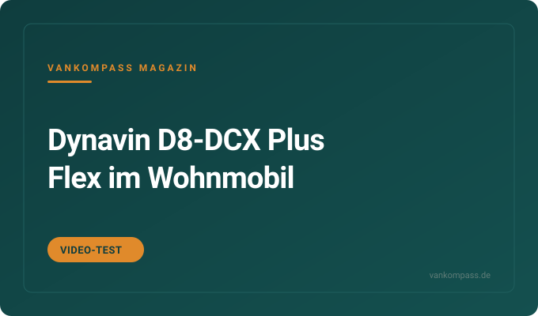
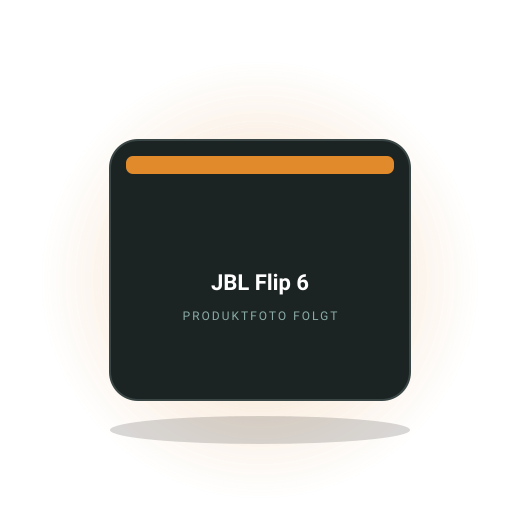

Video-Test
Dynavin D8-DCX Plus Flex im Wohnmobil: 10,1-Zoll-Radio mit CarPlay und Navi
10,1 Zoll, DAB+, Wireless CarPlay, Navi mit Fahrzeugmaßen, knapp 700 € komplett. Alle Fakten aus dem Video von Gero D.
Bereich
Welche Bluetooth-Box am Lagerfeuer taugt, wie du Lautsprecher und Radio im Kastenwagen tauschst, was Dämmung gegen Dröhnen bringt und wie Musik in den Wohnbereich kommt. Mit Vergleichen, Einbau-Praxis und einer klaren Empfehlung.

Redaktions-Tipp
Die kompakte Bluetooth-Box, die im Camper-Alltag Regen, Sand und Stürze wegsteckt und trotzdem voll klingt.
Warum wir es empfehlen: Klein genug für die Türablage, robust genug für Strand und Regen, und mit einer Laufzeit, die einen Abend am Lagerfeuer sicher übersteht. Zwei Boxen lassen sich zu Stereo koppeln, eine für den Wohnbereich, eine draußen.
Preis-Range90 bis 130 €Stand Oktober 2026
Bei Amazon ansehenAffiliate-Link *Preis bleibt für dich gleich. Die Laufzeit hängt stark von der Lautstärke ab.
Kostenlos als PDF
Strom, Schlafen, Küche, Sanitär, Sicherheit, Werkzeug. Zum Abhaken vor jeder Fahrt, damit du nie wieder ohne Ladekabel, Wasserschlauch oder Keil losfährst.

10,1 Zoll, DAB+, Wireless CarPlay, Navi mit Fahrzeugmaßen, knapp 700 € komplett. Alle Fakten aus dem Video von Gero D.
Alubutyl für 14,99 € in beide Türen, 20-W-Werksboxen raus, Axton-Set mit Hochtönern rein. Alle Schritte aus dem Video von Travel with me.
Wasserdicht, Laufzeit, Lautstärke am Lagerfeuer, Laden über USB-C: Welche Box zum Van passt und welche nur zur Küche.
Welche Einbaugrößen vorn passen, warum Dämmung der Tür mehr bringt als teure Chassis und was der Tausch kostet.
Welche Radios in die Konsole passen, wie Lenkradtasten und Rückfahrkamera erhalten bleiben und was der Einbau kostet.
Drei Wege, Musik in den Wohnbereich zu bringen: Stromverbrauch, Einbauaufwand und Klang im direkten Vergleich.
Die Fragen, die am häufigsten gesucht werden. Ausführlich beantwortet, mit Zahlen, Rechenwegen und den Fehlern, die du dir sparen kannst.
Für Camping eignet sich eine Box der Kompaktklasse mit Schutzart IP67, 10 bis 20 Stunden Laufzeit und USB-C-Ladung, etwa JBL Flip oder Charge, Bose SoundLink Flex oder Ultimate Ears Boom. Größere Partyboxen klingen voller, sind aber im Camper schwer unterzubringen und brauchen mehr Strom.
IP67 bedeutet staubdicht und zeitweise untertauchbar, das deckt Regen am Tisch, Sand am Strand und Spritzwasser beim Abwasch ab. Die Laufzeitangaben der Hersteller gelten für mittlere Lautstärke; wer draußen laut hört, halbiert sie. Boxen mit 20 bis 40 Wattstunden Akku lassen sich an jeder Powerbank oder Powerstation nachladen, ohne das Strombudget zu belasten. Zwei gleiche Boxen koppeln viele Hersteller zu Stereo, eine drinnen, eine im Vorzelt.
Achte auf eine Trageschlaufe oder Öse zum Aufhängen, ein Mikrofon für Freisprechen ist im Camper selten nötig. Und bedenke die Nachbarn: Auf dem Platz ist eine Box, die bei 30 Prozent Lautstärke sauber klingt, wertvoller als eine, die laut kann. Zum Vergleich der Bluetooth-Boxen
Ja, aber nur begrenzt: Im Zubehörmodus oder bei Radios mit Dauerplus läuft das Radio ohne Motor, zieht dann aber 0,5 bis 2 Ampere aus der Starterbatterie. Ein Abend Musik ist unkritisch, ein ganzes Wochenende kann die Starterbatterie leeren. Sauberer ist der Betrieb über die Bordbatterie oder eine Bluetooth-Box.
Viele Serien-Camper lösen das ab Werk: Beim VW California und Ford Nugget läuft das Radio über die Camper-Steuerung eine begrenzte Zeit nach oder lässt sich auf die Zweitbatterie legen. In Kastenwagen von Pössl oder Knaus hängt das Radio meist an der Starterbatterie, ein Umklemmen auf die Aufbaubatterie ist möglich, aber Werkstattarbeit. Moderne Radios mit großem Display brauchen deutlich mehr Strom als ältere Geräte.
Fehler, der oft passiert: Radio an, Zündung auf Stufe eins, Standlicht und Lüftung laufen mit. Dann sind es schnell fünf Ampere. Wer regelmäßig im Stand hört, lässt ein geschaltetes Dauerplus von der Bordbatterie legen oder nutzt eine Box, die sich über USB von der Powerstation versorgt.
Drei Wege funktionieren: eine Bluetooth-Box, die du einfach nach hinten stellst, ein kleiner 12-V-Bluetooth-Verstärker mit zwei Einbaulautsprechern im Wohnbereich, oder ein Autoradio mit Rear-Ausgang und zusätzlichen Lautsprechern in Hecktüren oder Schränken. Für die meisten Camper ist die Box die einfachste Lösung, der Verstärker die eleganteste.
Ein 12-V-Verstärker mit Bluetooth kostet ca. 30 bis 100 Euro, Stand Oktober 2026, braucht nur Plus und Minus von der Bordbatterie und treibt zwei Koaxiallautsprecher mit 10 oder 13 Zentimetern an. Im Leerlauf zieht er wenig Strom, bei Zimmerlautstärke bleibt der Verbrauch im einstelligen Wattbereich. Die Lautsprecher lassen sich in Schrankfronten, Deckenpaneele oder die Heckklappenverkleidung setzen.
Oft unterschätzt: das Gehäusevolumen. Ein Lautsprecher in einer offenen Schrankrückwand klingt dünn; ein kleines geschlossenes Volumen oder Dämmwolle dahinter hilft. Verlege die Kabel vor der Wandverkleidung und sichere die Leitung mit einer eigenen Sicherung ab. Wer nachts hört, setzt einen Schalter in Bettnähe.
In die vorderen Türen des Fiat Ducato ab 2006 passen in der Regel 16,5-Zentimeter-Lautsprecher, oft mit fahrzeugspezifischem Adapterring, im Armaturenbrett kleinere Hochtöner oder Koaxiale. Welche Größe genau, hängt vom Baujahr und davon ab, ob ab Werk ein Soundsystem verbaut war; die Einbau-Datenbanken der Lautsprecherhersteller geben Auskunft.
Der Tausch bringt vor allem dann etwas, wenn die Werkslautsprecher Papiermembranen mit kleinen Magneten sind. Komponentensysteme mit getrenntem Hochtöner klingen besser als Koaxiale, brauchen aber Platz für den Hochtöner. Entscheidend ist die Tür als Gehäuse: Ohne Dämmmatten auf dem Außenblech und abgedichtetem Innenblech verpufft ein Teil der Verbesserung. Rechne mit ca. 80 bis 250 Euro für ein Lautsprecherpaar und 30 bis 60 Euro Dämmmaterial pro Tür, Stand Oktober 2026.
Prüfe vor dem Kauf die Einbautiefe, weil Fensterheber und Türgriffmechanik im Weg sein können. Steckeradapter sparen Lötarbeit und erhalten die Rückrüstbarkeit. Und wer im Ducato ein Werksradio mit niedriger Leistung behält, sollte Lautsprecher mit hohem Wirkungsgrad wählen, statt auf Watt zu schauen. Zur Anleitung Lautsprecher tauschen
Ja, bei leeren oder dünn ausgebauten Kastenwagen ist Antidröhn-Dämmung eine der wirksamsten Maßnahmen für Fahrkomfort und Klang. Butyl- oder Bitumenmatten auf 25 bis 40 Prozent der großen Blechflächen beruhigen Türen, Radkästen und Seitenwände spürbar; vollflächiges Bekleben bringt wenig zusätzlich.
Dröhnen entsteht, weil große Bleche wie eine Membran mitschwingen. Schwere Matten verschieben die Resonanz und dämpfen die Schwingung, Schaumstoff oder Armaflex allein tun das nicht, sie dämmen Wärme und Luftschall. Pro Quadratmeter Matte rechnest du mit 1,5 bis 3 Kilogramm Zusatzgewicht; ein mittlerer Kastenwagen braucht für die wichtigsten Flächen etwa 4 bis 8 Quadratmeter. Die Kombination mit einer anschließenden Wärmedämmung ist der Standard im Selbstausbau.
Arbeite bei über 15 Grad, reinige das Blech mit Bremsenreiniger und drücke die Matten mit einer Andrückrolle fest an. Vor dem Kleben mit dem Finger klopfen: Wo es scheppert, gehört Matte hin, wo es dumpf klingt, nicht. Türen und Radkästen zuerst, da zahlt sich der Aufwand am meisten aus.
Auf Campingplätzen gilt in der Regel Nachtruhe von 22 bis 7 Uhr und auf vielen Plätzen zusätzlich eine Mittagsruhe zwischen 13 und 15 Uhr; außerhalb dieser Zeiten darf Musik in Zimmerlautstärke laufen, also so, dass sie an der Parzellengrenze kaum mehr hörbar ist. Die genauen Zeiten stehen in der Platzordnung.
Die Platzordnung ist Vertragsbestandteil, Verstöße können zum Platzverweis führen. Hinzu kommen kommunale Lärmschutzregeln und das Landesrecht zum Immissionsschutz, die auch auf freien Stellplätzen gelten. In Südeuropa sind Mittagsruhen oft länger und werden ernster genommen als in Deutschland. Im Freien tragen Bässe weit; was am Tisch leise wirkt, ist drei Parzellen weiter noch zu hören.
Praktisch: Box auf den Boden und zur eigenen Sitzgruppe richten, nicht auf den Tisch, von dem der Schall in alle Richtungen geht. Bass am Gerät absenken. Nach 22 Uhr Kopfhörer oder aus. Und wer tagsüber Gesellschaft hat, fragt die Nachbarn kurz, das löst mehr als jede Regel.
Kompakte Bluetooth-Boxen halten laut Herstellern 10 bis 20 Stunden, in der Praxis bei Außenlautstärke eher 6 bis 12 Stunden. Für ein Wochenende ohne Nachladen reicht das meist, für längere Touren lädst du über USB-C an Powerbank, Powerstation oder dem USB-Anschluss im Camper nach.
Die Herstellerangabe gilt für etwa 50 Prozent Lautstärke bei Zimmerklang. Draußen ohne Wände drehen die meisten auf 70 bis 80 Prozent, der Verstärker braucht dann ein Vielfaches an Strom, vor allem bei bassbetonter Musik. Kälte verkürzt die Laufzeit zusätzlich, bei Minusgraden deutlich. Eine Box mit 20 bis 40 Wattstunden Akku kostet an einer 1000-Wh-Powerstation pro Ladung also nur zwei bis vier Prozent der Kapazität.
Typische Fehler: die Box über Nacht an der Starterbatterie laden, in der Sonne liegen lassen oder leer wochenlang im Fach vergessen, was dem Akku schadet. Wer die Box ohnehin am Lagerfeuer nutzt, legt ein USB-C-Kabel fest zur Powerstation und lädt tagsüber während der Fahrt.
Noch nicht geholt?
120 Punkte nach Bereichen sortiert. Dazu neue Video-Tests und Ratgeber, sobald sie online sind.
Powerstations, Bordbatterien, Ladebooster, Verbrauch.
›Faltpanels, Dachmodule, Laderegler, Ertrag, Montage.
›Matratzen, Topper, Froli, Aufstelldach, Kälte von unten.
›Campingtoilette, Trenntoilette, Dusche, Entsorgung, Hygiene.
›Kühlbox, Kocher, Induktion, Geschirr, Stromverbrauch.
›Frischwasser, Tankhygiene, Filter, Pumpen, Winterfest.
›